Ordem Paranormal é um universo de investigação paranormal criado por Rafael Lange (Cellbit), que teve seu início através de campanhas de RPG de mesa em transmissões ao vivo na Twitch. Um jogo da saga, Ordem Paranormal: Enigma do Medo, tem previsão de lançamento para 2022.
Atualmente, sua ramificação principal são os episódios de RPG de mesa exibidos aos sábados, às 18 horas, no canal do Cellbit na Twitch. Todas as terças ocorrem as reprises, ao mesmo horário e também na Twitch, e, às quintas-feiras, o episódio é publicado no canal Lives do Cellbit no YouTube.